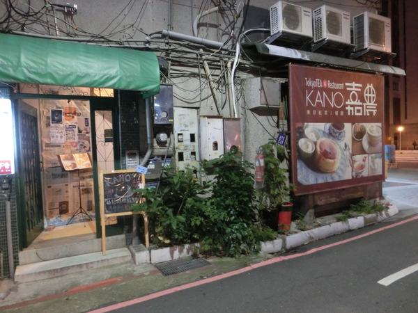
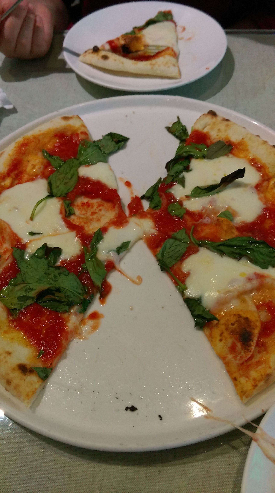
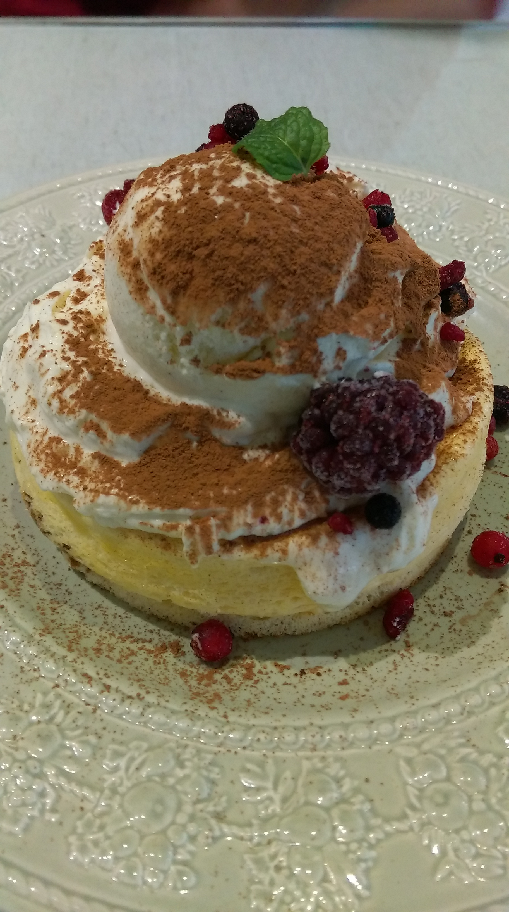
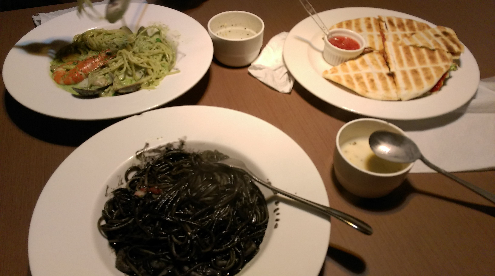

台北食記
品嘗"好茶"的好地方
店名:東京紅茶&餐廳KANO

在華山文創看完柯南展之後，想要去喝個下午茶，順便看一下剛才柯南展的解答，
因為大雨，所以運用了google大神選定一家離華山不太遠的餐廳。
為了怕迷路還特地開著導航領路，沒想到，在大馬路上我們就看著導航迷路了......
這家店實在是神秘到了一個極點，只有一個小小的、通到二樓的門當入口。
原本想說這家店應該人不會很多吧，但在吃過之後，總覺得人多也不意外，後來我們才發現原來我們很幸運，因為居然有人想吃也吃不到啊!!!!!!!
介紹一下餐點內容好了，我們當天吃的是莫札瑞拉起司pizza(下圖)，

價格是290元，吃的時候還蠻驚豔，雖然這個pizza很簡單，就是紅醬、起司還有一點搭配的菜鋪在薄酥脆的餅皮上而已，但就是因為他的簡單，像是直接告訴我說:[我就是pizza!]
或許是吃太多市面上看到的很多料的pizza，所以反而這種簡單的感覺能讓人覺得好吃。
想說是茶店，所以也點了一壺茶(事實上是不知道pizza有附可續杯，而且每次都續不一樣的茶)
焦糖紅茶~有淡淡的焦糖味還有奶味，我瞬間覺得我喝的茶來到一個不同的層次了，難以用言語形容，因為真的就是走出喝茶的新一步，完全沒辦法評論阿

吃飽喝足就是要上甜點，點了獨特的提拉米蘇厚鬆餅(上圖)，價格是300元，這個也沒話說，燙燙厚厚的鬆餅，底下搭配苦苦的咖啡味，上層放上冰冰涼涼的香草冰淇淋，真的很搭。
整體來說是好吃的店，會想再來，但是摸摸錢包，可能是一陣子一次的大餐啦
PASTA 店
店名:NIDO PASTA

在市府轉運站附近，也算是在巷子裡，本來是要訂薄多義手工pizza的，可是已經客滿了，基於想要吃義大利麵的考量，找到了NIDO PASTA，上圖是我們那天點的餐
他不只有義大利麵，也有烤餅可以選擇，而且真的是"平價"義大利麵，價格都在200元以下，而且附玉米濃湯跟飲料喝到飽喔~
當天我們是兩個人吃這樣的分量，說實在是有點飽了，烤餅我們最後是飽到差點吃不下。整體來說是不錯的店，因為價錢就一般台北看到的價格來說已經算是蠻划算的，而且環境也蠻有氣氛的，除非是遇到我這種講話嗓門很大的人才會稍嫌吵鬧。
回首頁